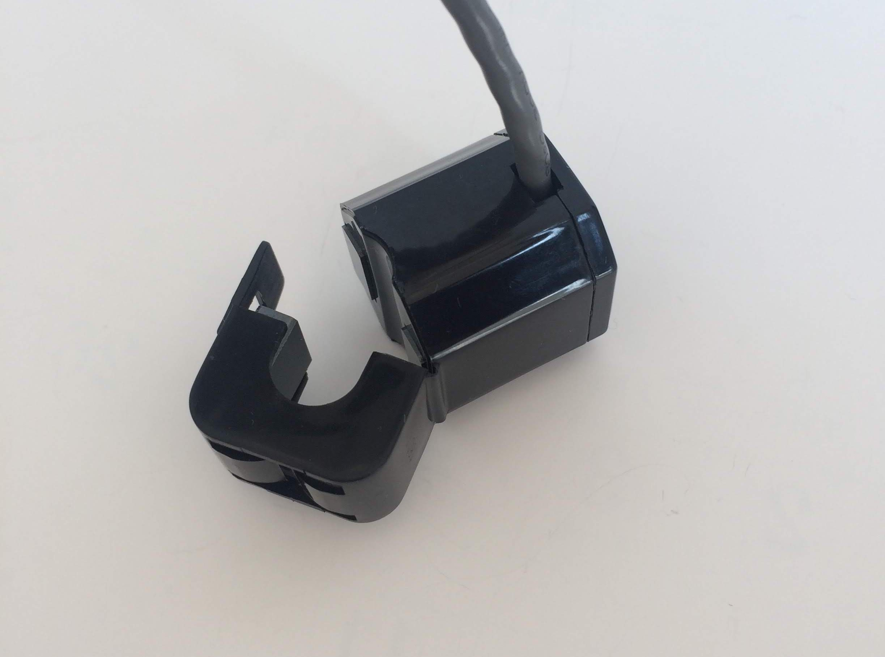
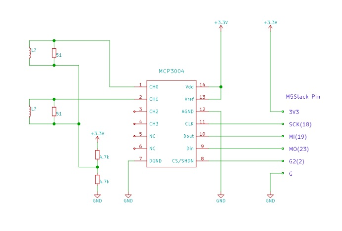
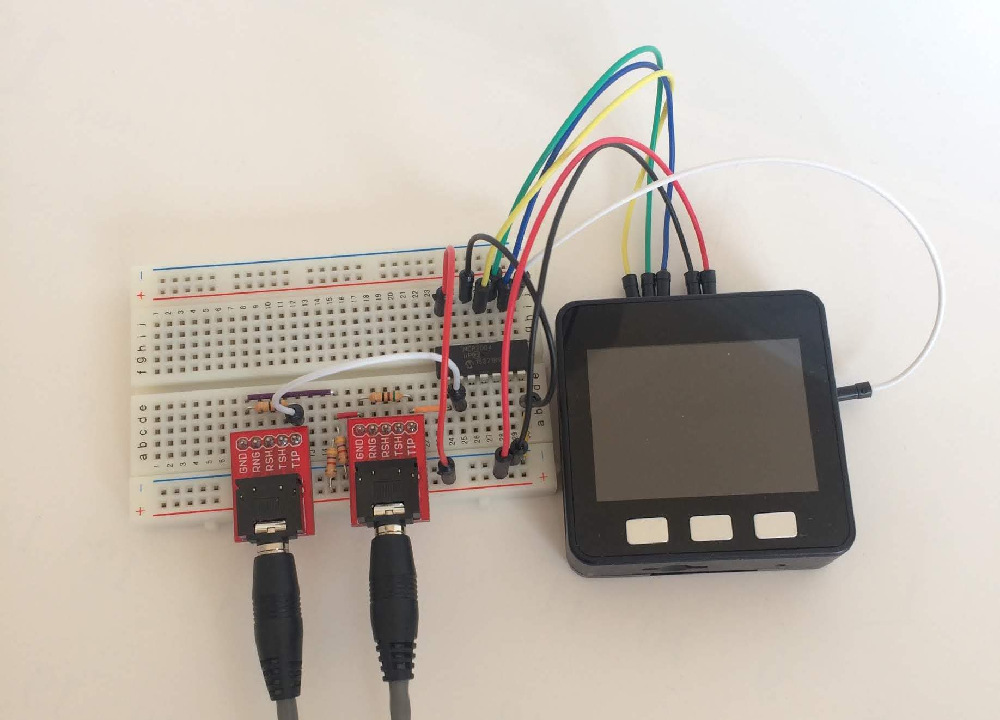
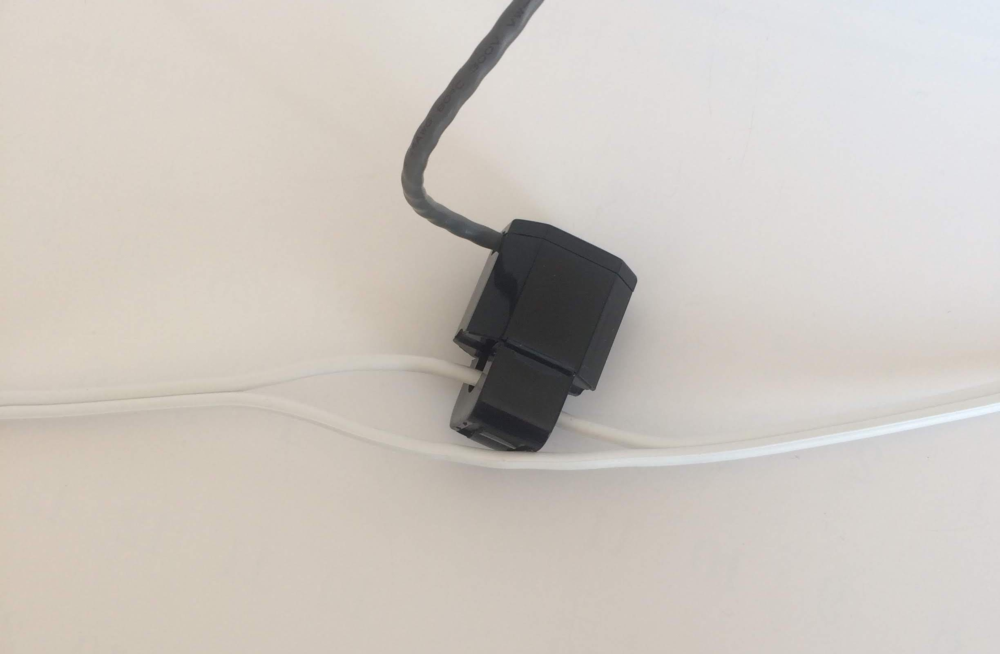
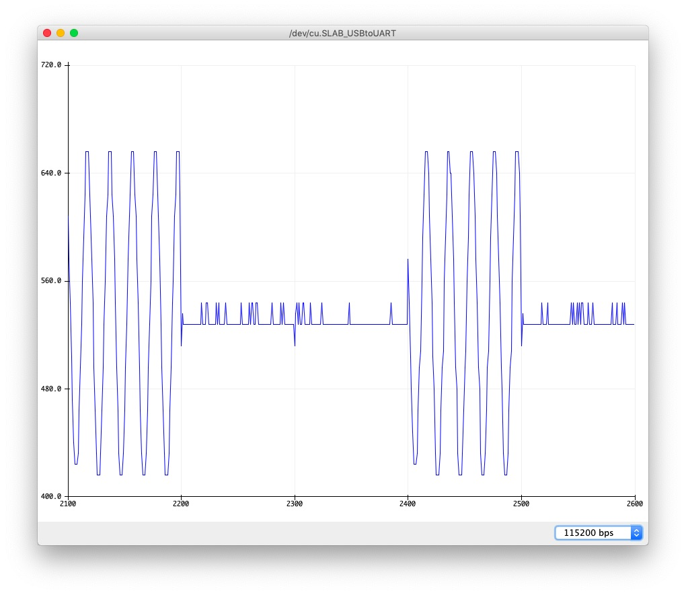
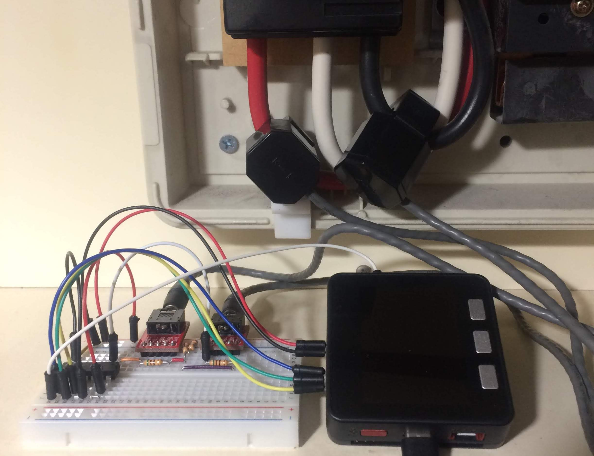
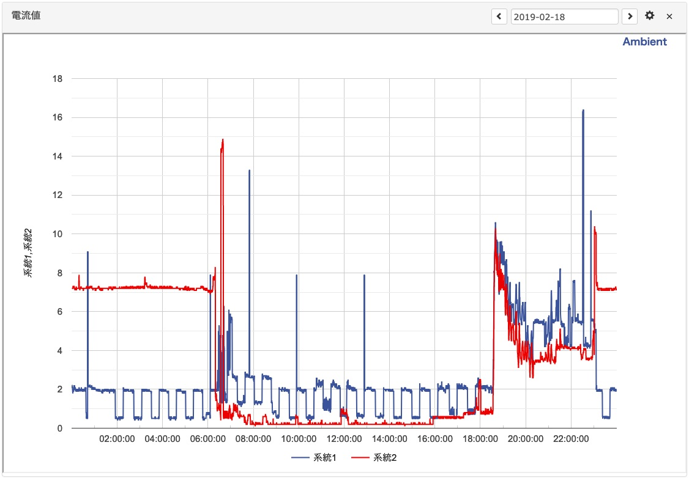
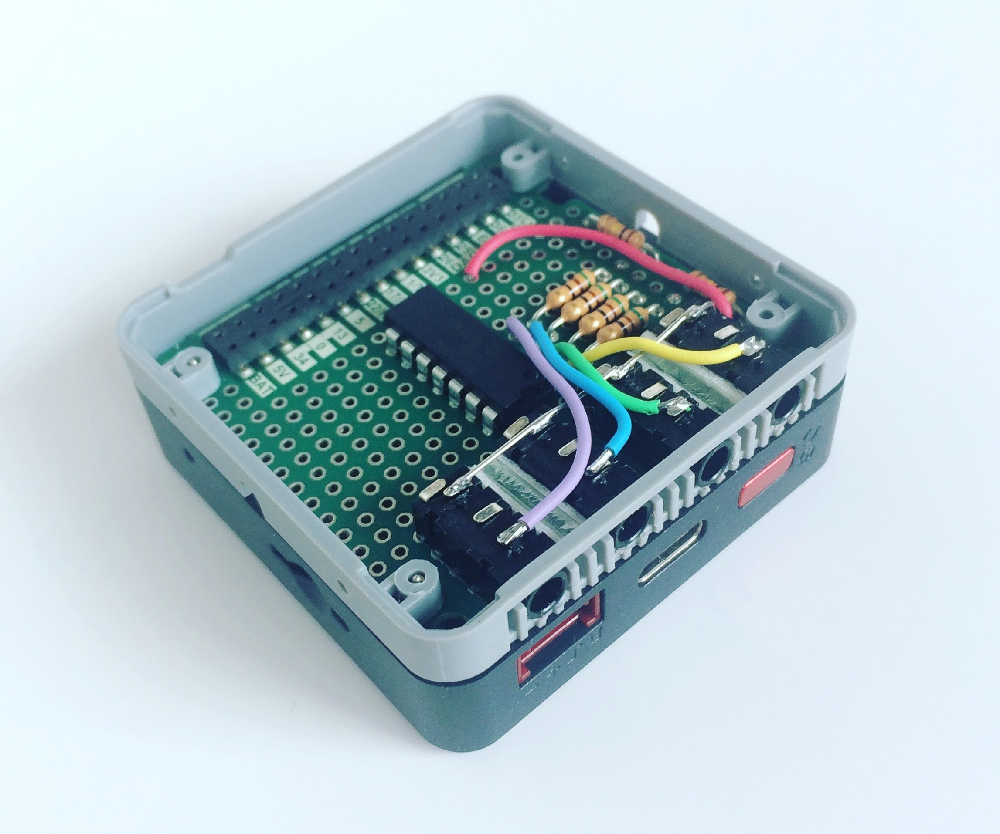

「AmbientでIoTをはじめよう」、第17回は、M5Stackとクランプ式電流センサを使って、機器が使用する電流値を測ります。
家庭やオフィス、工場などでは非常に多くの機器が電気で動いています。機器の電気の使用状態を測り、データを蓄積して見える化することは、省エネやコスト削減に効果的です。さらに、見守りサービスや設備の稼働率改善などのサービスに発展させることもできます。
クランプ式電流センサは電流が流れる線を磁気コアではさんで電流を測定します。電線を流れる電流によって磁気コア内に磁束が発生し、それに応じて2次巻線に2次電流が流れます。そこに抵抗をつなぎ、抵抗の両端の電圧を測ります。この方法は交流しか測れませんが、二つに分かれた磁気コアで電線をはさむことで、測定対象の回路を切らずに電流が測定できます。

上の写真のセンサは今回使用する「クランプ式AC電流センサ30A」です。データシートによれば、測定対象の電流に対して2000:1の2次電流が得られます。20Aの電流であれば10mAの2次電流が流れます。
クランプ式電流センサを使って電流を測定する回路は次のようになります。

クランプ式電流センサの2次巻線に51Ωの負荷抵抗をつなぎ、その両端の電圧をADコンバーターMCP3004で測ります。交流を測定するので、負荷抵抗の両端の電圧はプラスとマイナスになります。4.7kΩの抵抗二つで電源電圧3.3Vの半分の電圧(1.65V)を作り、1.65Vを中心にして電圧が変化するようにしました。
MCP3004は10ビットのADコンバーターで、入力が0VからVrefV(=3.3V)のときに0から1023の値が読めます。ADコンバーターで読んだ値をiとすると、負荷抵抗の両端の電圧Vrは次のようになります。
Vr = (i - 512) / 1024 * 3.3
負荷抵抗が51Ω、クランプ式電流センサの1次電流と2次電流の比率が2000:1なので、1次電流Iは次のように計算できます。
I = Vr / 51 * 2000
ブレッドボード上に作った測定回路です。

センサ端末に必要な部品をまとめました。
| 部品 | 個数 |
|---|---|
| M5Stack Basic | 1個 |
| クランプ式AC電流センサ30A | 2個 |
| オーディオジャック+ピッチ変換基板のセット | 2個 |
| ジャンパワイヤ(オス～オス) | 1セット |
| 普通のブレッドボード | 1個 |
| MCP3004 | 1個 |
| 抵抗(51Ω) | 2個 |
| 抵抗（4.7ｋΩ) | 2個 |
日本の家庭で使われている電気は100Vの交流で、東日本は50Hz、西日本は60Hzです。交流の電流値を測るために、まず1m秒間隔で100回、電流値を測定してみます。このように周期的に値を測定する処理をサンプリングといいます。1m秒 x 100回 = 100m秒なので、50Hzだと5周期分、60Hzだと6周期分測定します。
測定プログラムは次のようになります。
1m秒間隔で関数onTimer0()を呼び出すタイマーを用意します。forループの先頭でフラグが0の間待つようにして、関数onTimer0()でフラグを1にすることで、1m秒間隔でforループを実行するようにします。forループの中でADコンバーターMCP3004を読み、値をバッファーに格納することで、1m秒間隔で電流値を測定します。
最初のプログラムは交流のサンプリングが上手くできているかを確認するために、サンプリングしたデータをプリントアウトします。
MCP3004をアクセスする部分はライブラリー化しています。ライブラリーも含めたプログラム全体はGithubに置きました。

電源ケーブルは2本の線でできています。2本の線をクランプで挟んでも、行きと帰りの電流が打ち消しあって磁束が発生せず、2次電流は流れません。写真のように2本の線の一方だけを挟んで測定します。
プログラムをビルドしてM5Stackに転送し、いつものシリアルモニタではなく、シリアルプロッタを起動します。
電源ケーブルの先に適当な電気製品をつなげます。実験では1200Wのドライヤーをつなげました。ドライヤーを動かしたり止めたりすると、シリアルプロッタに次のような波形が描かれます。波形はつないだ機器によって異なりますが、交流波形が測定できているのが確認できました。

プラスマイナスに振れる交流の電流値を求めるには、何周期か測定したサンプリング値をそれぞれ2乗して平均値を求め、平方根を取ります。
その部分の処理は次のようになります。最初のプログラムはサンプリングした値を確認するために値を全てバッファーに記録しましたが、電流値を計算するだけならその必要はありません。サンプリングするたびにサンプル値を2乗して足し込んでいき、最後に平均して平方根を求めます。この処理を例えば1分ごとに呼び出せば、1分ごとの電流値を測れます。
電力は電圧×電流です。家庭の交流の電圧は100Vなので、電流値に100Vをかけると電力値になるかというと、そうなりません。
交流の場合は電圧と電流の位相のずれがあるため、実際に使われた電力(有効電力)は
有効電力＝電圧×電流×力率
になります。今回は正確な電力値を求めるよりも、機器の電気の利用パターンを調べることを目的に、電流値を使って電力使用の傾向を把握することにしました。
1分ごとの電流値が得られたので、これをM5StackのLCDに表示します。
100件のリングバッファーを用意して、1分ごとに電流値を格納し、リングバッファー中の値をLCDに表示します。LCDに表示する部分のプログラムは次のようになります。
プログラム全体はGithubを御覧ください。
1分ごとの電流値をAmbientに送って可視化します。
Ambientへのデータ送信は簡単です。setup関数でWi-Fiに接続し、Ambientオブジェクトをambient.begin()で初期化します。loop関数の中で電流値を測定し、ambient.set()でデータをセットし、ambient.send()に送信します。
Ambientに送信するのに関係する部分のプログラムは次のようになります。
プログラム全体はGithubを御覧ください。
日本の多くの家庭は単相3線式といって2系統で電力が供給されています。2系統の両方の電流値を測ることで家全体の電流の使用状態を測定できます。
実際に分電盤にクランプ式電流センサを取り付けた様子です。

取り付けはブレーカーを落とした状態で、十分気をつけておこなってください。
測定した電流値をAmbientで見ると、次のようなグラフが見られます。

チャート設定でグラフサイズを「large」にして、d1とd2を同じチャートで表示し、日付指定を設定しています。
グラフは著者の自宅の電流値です。系統1(青い線)に冷蔵庫が接続されていて、オン/オフを繰り返しながら常時動いているのが分かります。系統2にオイルヒーターがついていて、0時から6時ぐらいまで動いています。6時半ぐらいの大きなピークはオーブンレンジです。
M5Stackにはオリジナルの拡張モジュールが開発できる「プロトモジュール」があります。ブレッドボードで動作確認した回路をプロトモジュールを使って作りました。電流センサーは4個まで接続できるようにしました。

M5StackはGPSモジュールなどの拡張モジュールで機能拡張できますが、プロトモジュールを使うと独自の機能拡張もできて、さらに応用範囲が広がります。
電流計を家庭に設置すれば、家庭での電気の使用状況が可視化でき、
省エネ意識も高まるでしょう。毎日の傾向を調べれば、見守りサービスのデータとしても使えそうです。
工場の工作機械の電気使用状況を調べれば、機械の稼働状況を可視化し、稼働率の改善などに役立てられそうです。
この記事はアンビエントデーターの下島が担当しました。